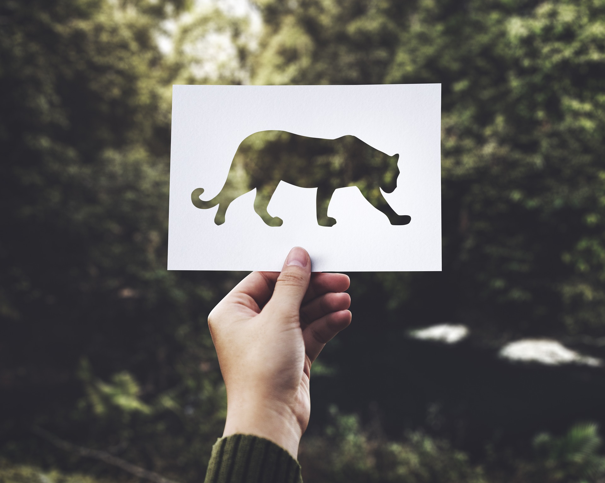
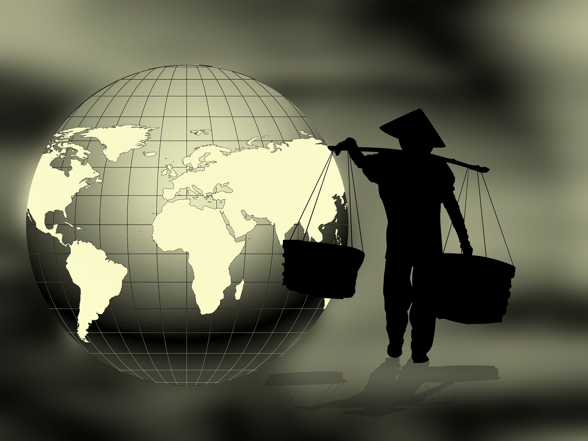

Проблема браконьерства
Из-за браконьерства многочисленные разновидности животных
уже вымерли либо пребывают под угрозой вымирания, так как
браконьеры не обращают внимания ни на охранный статус
биологических видов, ни на сезон запрета на охоту, ни на
разрешённые квоты на отстрел животных. От этого не только
уменьшается разнообразие биологических видов,но и страдает
экономическое благосостояние большого числа регионов Земли,
например, многих стран Африки, которые сильно зависят от
существования важных для них видов животных
Вырубка леса
Вопреки на то что леса считаются восстанавливаемым ресурсом,
темп их вырубки очень высок и никак не возмещается скоростью воспроизводства.
Каждый год уничтожаются огромное количество гектаров лиственных и хвойных лесов.
Выжигание лесов порождает загрязнение атмосферы окисью углерода, его выбрасывается
более, нежели поглощается. Вдобавок при сведении лесов в воздушное пространство
поступает углерод, скапливающийся в почве под деревьями. Это вносит приблизительно
четвертую часть в процесс создания парникового эффекта на Земле.

Перенаселение
Перенаселение -также глобальная современная экологическая
проблема. Количество землян увеличивается стремительными темпами.
А ведь каждый человек употребляет значимое количество разных природных
ресурсов. Природные ресурсы не успевают восстанавливаться.Большое количество
людей на планете способствует быстрому уничтожению природы.
Вымирают целые виды животных и растений, загрязняются водоёмы, воздух, земля...